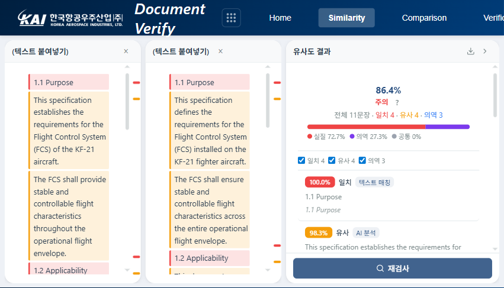
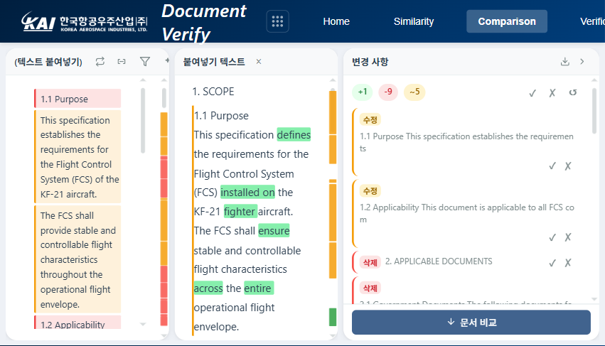
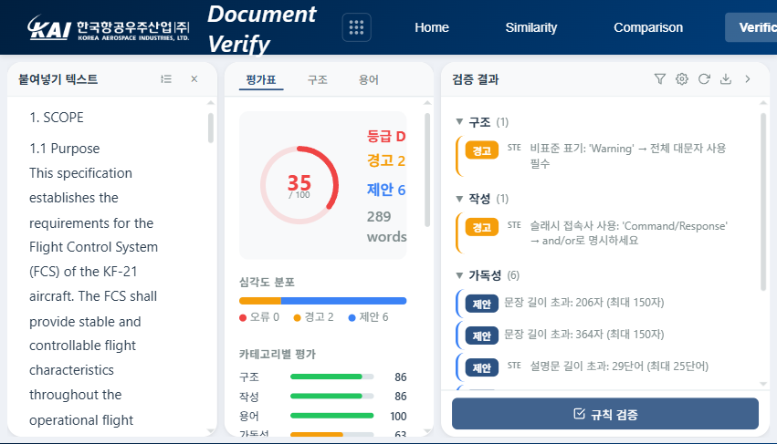

Document Verify — 문서 검증 시스템
Verify는 기술 문서의 유사도 검사, 문서 비교, 규칙 검증을 수행하는 통합 검증 도구입니다. 3대 국제 규격 기반 21종 규칙 엔진과 품질 스코어링을 제공합니다.
Verify는 세 가지 독립된 검증 모드를 제공합니다. 모드별로 문서를 업로드하거나 텍스트를 붙여넣어 검증을 실행하며, 결과는 XLSX, HTML, TXT 형식으로 내보낼 수 있습니다.
Verify 메인 화면 — 세 가지 검증 모드 선택
두 문서 간 텍스트 유사도를 측정합니다. Winnowing 핑거프린트로 표면적 복사를 감지하고, bge-m3 벡터 임베딩으로 의미적 유사성까지 포착합니다.

유사도 검사 결과 — 유사 구간 하이라이트 및 수치 표시
원본과 수정본을 단어 수준으로 비교합니다. 변경사항은 AI가 삽입, 삭제, 수정, 형식 변경으로 자동 분류하며, 리뷰어가 각 변경에 대해 수락 또는 거절 판정을 내릴 수 있습니다.

문서 비교 결과 — Diff 표시, AI 분류, 수락/거절 판정
3대 국제 규격(ASD-STE100, MIL-STD-961E, MIL-STD-38784B)에서 선별한 21종 규칙으로 문서 품질을 자동 점검합니다. 검출된 이슈를 심각도별로 분류하고, 밀도 기반 스코어링으로 A~D 등급을 산출합니다.

규칙 검증 결과 — 이슈 목록, 품질 스코어, 카테고리별 평가
규칙 엔진은 항공우주 기술 문서에 널리 적용되는 3대 국제 규격을 분석하여 구축하였습니다. 세 규격은 각각 작성 명확성, 문서 구조, 매뉴얼 서식을 담당하여 기술 문서 전반을 커버합니다.
| 규격 | 역할 | 분석 | 구현 |
|---|---|---|---|
| ASD-STE100 Issue 7, 2017 |
기술 문서 작성 명확성 표준. 49개 작성 규칙 + 900단어 승인 사전. | 49개 | 12개 (24%) |
| MIL-STD-961E Rev E, 2008 |
군사/항공 규격 문서 구조 표준. 6섹션 필수 구조, 요구사항 언어 규칙. | 13개 | 9개 (69%) |
| MIL-STD-38784B Rev B, 2020 |
기술 매뉴얼 서식 표준. 약어, 경고문, 표/그림 참조 규칙. | 10개 | 6개 (60%) |
961E는 구조 검증(제목 패턴, 번호 체계) 중심이라 자동화 적용률이 69%로 높은 반면, STE100은 문맥 판단이 필요한 규칙이 많아 24%에 그칩니다. 상용 도구인 HyperSTE가 NLP 엔진을 탑재하여 62%를 자동화하는 것과 비교하면, NLP 없이 고정밀 규칙만을 선별한 결과입니다.
3대 규격에서 72개 규칙을 분석하고, 사내 기준 6종을 더해 최종 21종을 선별하였습니다.
| 카테고리 | 수량 | 출처 | 주요 점검 항목 |
|---|---|---|---|
| STE 작성 규칙 | 8종 | ASD-STE100 | 문장 길이 제한, 수동태 감지, 단락 길이, 경고문 표기, 슬래시 접속사 금지 |
| MIL 구조 규칙 | 7종 | 961E / 38784B | 필수 섹션 존재, shall/will 위치 제한, 약어 첫 사용 정의, 교차참조 검증 |
| 사내 기준 | 6종 | 커스텀 | 번호 연속성, 표/그림 캡션, 금지 용어, 용어 일관성, 문장 길이(음절) |
자주 검출되는 규칙 세 가지를 소개합니다.
ASD-STE100은 절차문을 20단어 이하로 작성하도록 규정합니다. 긴 문장은 번역 오류를 유발하고 현장 작업자의 이해도를 떨어뜨립니다.
원문: "Before you start the installation procedure, make sure that all the safety pins are removed and the access panels are open and secured in the up position." — 29단어, 초과
개선: "Remove all safety pins. Open the access panels and secure them in the up position. Start the installation procedure." — 각 10단어 이하
섹션 번호가 건너뛰거나(1.1 → 1.2 → 1.4) 계층이 갑자기 변경되는(3.2.1 → 3.3) 오류를 감지합니다. 기술 문서에서 번호 누락은 교차참조 오류로 이어집니다.
검출: "3.1 → 3.2 → 3.4" — 오류: 번호 3.3 누락
MIL-STD-961E(4.6.3)와 MIL-STD-38784B(4.8)의 공통 요구사항입니다. 약어를 처음 사용할 때 풀네임을 함께 표기해야 하며, 미정의 약어는 경고로 분류됩니다.
검출: "The FCS shall comply with..." — 경고: FCS 풀네임 미정의
총 78개 규칙(규격 72개 + 사내 6개)을 자동화 가능성에 따라 세 등급으로 분류하였습니다.
| 등급 | 정밀도 | 구현 | 설명 |
|---|---|---|---|
| A등급 | 90% 이상 | 우선 구현 | 정규식, 사전 기반. 오탐 거의 없음. 예: 문장 길이, 필수 섹션 존재, 약어 정의 |
| B등급 | 60~90% | 일부 비활성 | 휴리스틱 기반. 오탐 가능성 있어 기본 OFF인 규칙 포함. 예: 수동태, 명사 클러스터 |
| C등급 | — | 제외 | 인간 판단 또는 고급 NLP 필요. 폐쇄망 환경에서 자동화 불가. 57개 해당 |
검출된 이슈의 밀도(100단어당 가중 이슈 수)를 기반으로 문서 품질을 수치화합니다. Acrolinx의 밀도 기반 스코어링 방식을 채택하였습니다.
| 등급 | 점수 | 판정 |
|---|---|---|
| A | 90 – 100 | 우수 — 출판 가능 수준 |
| B | 70 – 89 | 양호 — 경미한 수정 후 승인 가능 |
| C | 50 – 69 | 보통 — 상당한 수정 필요 |
| D | 0 – 49 | 미흡 — 전면 재검토 권장 |
이슈 심각도에 따라 가중치가 다릅니다. 오류(error)는 5, 경고(warning)는 2, 제안(suggestion)은 1이며, 규칙 신뢰도(confidence)를 곱하여 최종 밀도를 산출합니다. 오류 항목을 우선 해결하는 것이 점수 개선에 가장 효과적입니다.